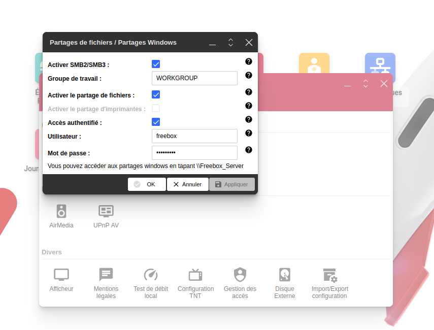

Monter un disque externe Freebox sur Linux
Wed 15 February 2023 Freebox
Mon ordinateur a une capacité de stockage du disque dur très limitée. Pour sauvegarder des fichiers, je suis contraint de brancher un disque dur externe, et ce n'est pas très pratique pour un portable.
Comme je possède une Freebox mini 4K, l'idée va être de brancher un disque externe sur la box et de monter le disque sur le PC pour qu'il soit accessible tout le temps, comme un disque interne.
La première étape consiste à brancher le disque externe sur la freebox et à le formater via l'interface de la freebox. La procédure est expliquée sur le site de l'assistance de free. C'est important de ne pas manquer cette étape, car le disque va être renommé en 'Freebox', ce qui est important pour la suite.
Pour la suite, tout est très bien expliqué sur le site suivant. Je ne vais faire que paraphraser.
Tout d'abord sur l'interface de la freebox, il est nécessaire de cocher les options de partage windows.

Dans le terminal, on commence par installer le paquet cifs qui va permettre de dialoguer avec le serveur freebox
sudo apt-get install cifs-utils
Comme pour le tutoriel sur le montage de l'iPhone, on crée un point de montage pour la Freebox :
sudo mkdir /media/Freebox
La partie maintenant qui me dérange le plus, il faut créer un fichier de credentials en clair sur le PC. Je pense qu'il doit y avoir une solution plus propre avec pam_mount mais je n'ai pas encore trouvé la solution.
sudo pluma /home/$USER/.smbcredentials
Dans le fichier nouvellement créé, on ajoute les éléments de login :
username=freebox
password=XXXXXXX
Puis, on donne les droits sur le fichier :
sudo chmod 777 /home/$USER/.smbcredentials
Enfin, pour que le disque monte à chaque redémarrage du PC, il faut ajouter la ligne suivante au fichier fstab.
sudo pluma /etc/fstab
Et on ajoute les lignes suivantes :
#mount freebox
//192.168.1.254/Freebox /media/Freebox cifs _netdev,rw,users,credentials=/home/VOTRE_UTILISATEUR/.smbcredentials,iocharset=utf8,uid=1000,sec=ntlmv2,file_mode=0777,dir_mode=0777,vers=2.
C'est là qu'il est important d'avoir bien formaté le disque externe via l'interface Freebox, pour que le disque à monter s'appelle bien Freebox à l'adresse 192.168.1.254 (c'est adresse IP de la Freebox, elle peut varier en fonction des box, mais vous pouvez la retrouver dans l'interface / paramètre de la Freebox / mode réseau)